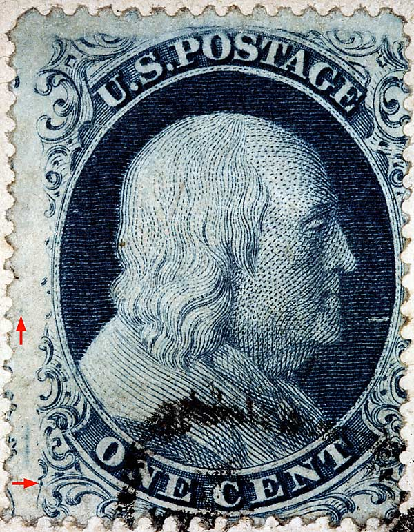
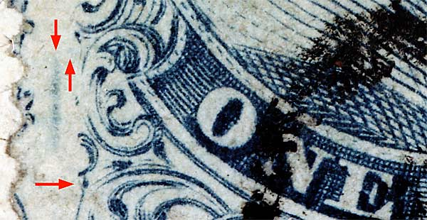
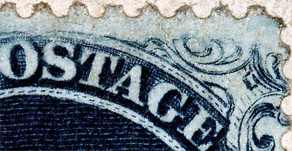
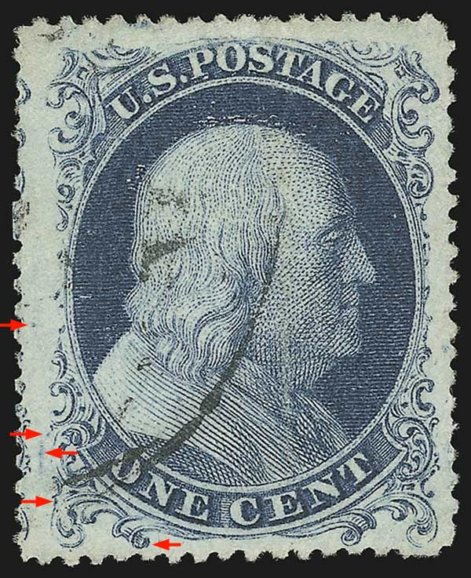
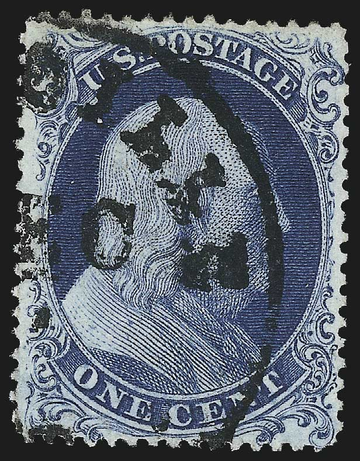

1¢ Franklin Issue of 1851-1857, PLATE 4 Position 93R4 |
| Scott #6, or #19 Blue, Type Ia , Relief F Issued both imperforate and perforate. PLATING NOTES: Neinken illustrates a dot to the right of Ornament Z1 and the vertical scribe line. Our Siegel reference images (FIGURES 3 and 4 below) do not show this dot. The dot above and to the left of Ornament E technically belongs to 92R4. Courtesy of Lixiong Li |
|  |
| Figure 1. (BELOW) The Neinken plating diagram illustrates a dot between Ornaments G and H. FIGURES 3 and 4 below show this blurry dot of color well but in our patient image this dot is weak and barely visible. The vertical blur of color to the left of Ornament H is not illustrated in the plating diagrams and may not be consistant. NEW PLATING MARK: Additionally there is a heavy dot in Ornament K which is shown on all 3 images and other reference material held by the archive. This dot is not illustrated in the Neinken/Ashbrook plating diagrams.
 |
| Figure 2. (BELOW) The Neinken plating diagram illustrates plating marks in the A and G of POSTAGE. Both our reference images (FIGURES 3 and 4 below) and this image does not reveal these plating marks.
 |
| Figure 3. (BELOW) Courtesy of the Robert A. Siegel Auction Gallery  |
| Figure 4. (BELOW) Courtesy of the Robert A. Siegel Auction Gallery  |
| DISCLAIMER and COPYRIGHT INFORMATION: Thanks for visiting this site. I hope you learn something new as we are making new discoveries all the time. You, the visitor, have my permission to link to my pages and to share the INFORMATION with others. The images themselves fall under the fair use guidelines established by the United States Congress and Copyright law. Basically contact us before using. I also ask in return that you send me an e-mail if I have made a mistake, or have made some other technical blunder that in my rush to put these pages up would cause the visitor confusion. Please also visit my other website at www.slingshotvenus.com. and support the live music arts. While your there, be sure to purchase our music. There are not many philatelic rock stars around and we need all the help we can get. :-) I can be reached at: nerdman@ix.netcom.com REVISED 8.8.2015 |